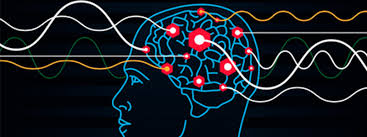
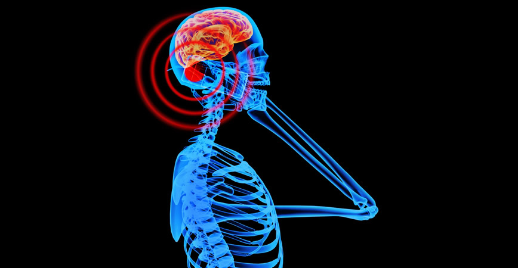

Ondas y salud: equilibrio entre beneficio y riesgo

Vivimos inmersos en un entorno lleno de ondas: sonido, luz, radiofrecuencia e incluso las oscilaciones eléctricas del cerebro. En física, una onda es una perturbación que transporta energía sin desplazar materia de forma permanente. Estas pueden ser longitudinales, como el sonido, o transversales, como las ondas electromagnéticas. En el campo de la salud, su aplicación ha permitido avances extraordinarios. La resonancia magnética (RSNA) utiliza ondas de radio y campos magnéticos para obtener imágenes internas del cuerpo sin radiación ionizante.De igual manera, la Organización Mundial de la Salud (OMS) destaca la importancia de las tecnologías de imagen para el diagnóstico temprano de enfermedades.
El cerebro humano genera ondas eléctricas que pueden medirse mediante electroencefalografía. Estas se clasifican por frecuencia: beta (concentración), alfa (relajación), theta (meditación) y delta (sueño profundo). Investigaciones publicadas en Frontiers in Human Neuroscience indican que ciertos estímulos auditivos rítmicos, como los sonidos binaurales, pueden favorecer estados de relajación al sincronizar la actividad cerebral en rangos alfa o theta. Aunque los efectos pueden variar entre individuos, existe evidencia de que determinadas frecuencias contribuyen a disminuir el estrés y mejorar la calidad del descanso.
El ultrasonido utiliza ondas sonoras de alta frecuencia (superiores a 20 kHz) para producir imágenes internas del organismo mediante ecografías. Además de su uso diagnóstico, también se emplea en fisioterapia para estimular la regeneración tisular y reducir inflamaciones. Estudios clínicos publicados en la revista Physical Therapy respaldan su aplicación terapéutica cuando la intensidad y el tiempo de exposición son cuidadosamente controlados.
Claro que sí. En el universo físico, toda forma de energía posee su contraparte. Las ondas no son inherentemente buenas o malas; su efecto depende de la frecuencia, la intensidad y el tiempo de exposición. Cuando estos parámetros superan los límites biológicos, pueden producir daño. La OMS advierte que la exposición prolongada a niveles de ruido superiores a 85 decibelios puede causar pérdida auditiva permanente. Asimismo, la Agencia Internacional para la Investigación del Cáncer (IARC) clasifica la radiación ultravioleta como carcinógena cuando la exposición es excesiva. En el caso de los rayos X, su uso médico es seguro bajo protocolos estrictos, pero la sobreexposición puede generar alteraciones celulares.


Desde una perspectiva biofísica, el impacto de las ondas en la salud se resume en tres variables fundamentales: frecuencia, intensidad y tiempo de exposición. La misma energía que permite observar el interior del cuerpo o inducir relajación mental puede resultar perjudicial si se emplea sin control. La ciencia contemporánea no busca eliminar las ondas de nuestro entorno, sino comprenderlas y regularlas con base en evidencia. En el equilibrio energético entre beneficio y riesgo se encuentra la verdadera relación entre las ondas y el bienestar humano.